Introducere
Vizualizarea Contacte este locul central pentru toate contactele dvs. în Outlook 2010. Menținerea unei liste detaliate de contacte va face trimiterea de e-mailuri și programarea întâlnirilor mult mai ușoară.
În această lecție, veți învăța cum să adăugați, să gestionați și să vă organizați contactele. Vom vorbi și despre cum să importați contactele.
Vizualizare ContacteOutlook 2010 vă păstrează toate contactele organizate în vizualizarea Contacte. După ce ați adăugat persoane de contact în Outlook, veți folosi aceleași informații de contact pentru a trimite e-mailuri, a programa întâlniri și a atribui sarcini . Păstrarea unei liste detaliate de contacte poate fi deosebit de utilă la locul de muncă, deoarece poate fi necesar să comunicați cu multe persoane diferite în fiecare zi.
Interfața de vizualizare Contacte- Pentru a accesa Vizualizarea Contacte, localizați și selectați fila Vizualizare Contacte din colțul din stânga jos al ecranului. Va apărea vizualizarea Contacte.
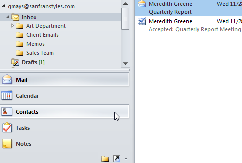
Există două moduri de a adăuga contacte:
- Puteți introduce manual informații pentru fiecare dintre contactele dvs.
- Puteți importa listele de contacte existente din alte conturi, cum ar fi Gmail. Dacă aveți deja mai multe persoane de contact salvate cu alt cont, această metodă vă poate economisi mult timp și efort.
- Din vizualizarea Contacte, localizați și selectați comanda Contact nou din Panglică.
- Va apărea caseta de dialog Contact.
- Introduceți informațiile de contact. Cel puțin, ar trebui să introduceți un nume și un prenume, precum și o adresă de e-mail. Cu toate acestea, puteți introduce și alte informații, cum ar fi numere de telefon, adrese de e-mail alternative și multe altele.
- Când ați terminat de completat informațiile de contact, faceți clic pe Salvare și închidere.
- Contactul va fi adăugat la lista dvs. de contacte.
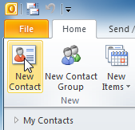
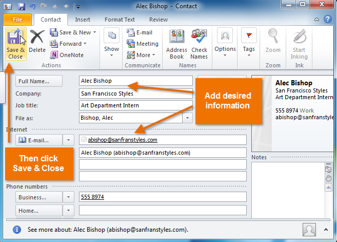
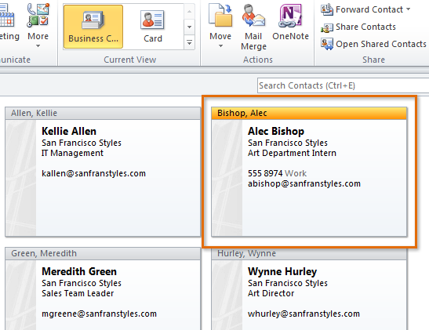
Pentru a importa contacte în Outlook, trebuie mai întâi să exportați acele contacte într-un fișier, cel mai frecvent un fișier cu valoare separată prin virgulă , cunoscut și sub numele de CSV. Majoritatea aplicațiilor de e-mail vor oferi instrucțiuni despre cum să exportați contactele existente. După ce ați exportat contactele, sunteți gata să le importați în Outlook.
- Faceți clic pe fila Fișier din Panglică.
- Va apărea vizualizarea în culise. Selectați Deschidere.
- Vor apărea opțiunile Deschidere. Selectați Import.
- Va apărea Expertul Import și Export. Urmați instrucțiunile pentru a importa contacte în Outlook.
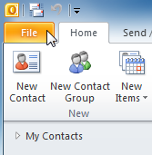
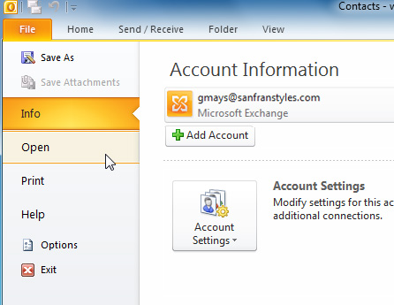
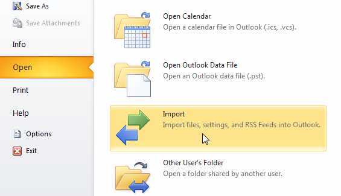
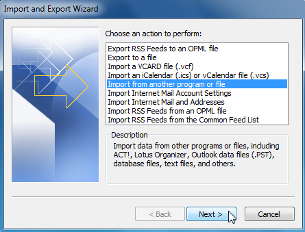
Grupurile de contact sunt deosebit de convenabile pentru a trimite mesaje unui grup de persoane, cum ar fi o anumită echipă de la locul de muncă.
- Selectați grupul de contacte dorit, apoi faceți clic pe comanda E-mail din Panglică.
- Va apărea fereastra Scriere, iar grupul de contacte va fi copiat în câmpul Către:. Mesajul va fi trimis tuturor celor din grupul de contact.
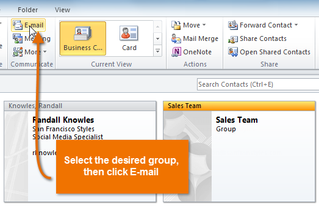
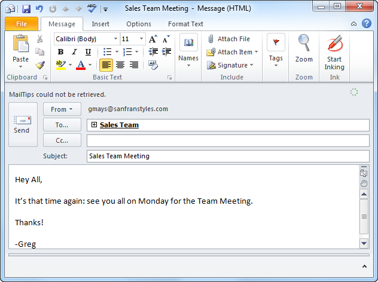
Dacă doriți să utilizați Outlook 2010 pentru a gestiona proiecte și sarcini, puteți atribui sarcini (cunoscute și sub numele de To-Do's) persoanelor de contact. Contactul dvs. va primi o notificare despre sarcină și veți fi notificat când sarcina este finalizată.
- Faceți clic pe persoana de contact dorită, localizați și selectați comanda Mai multe din Panglică, apoi selectați Atribuire activitate din fereastra derulantă.
- Va apărea fereastra Sarcină. Introduceți un subiect așa cum ați face pentru un mesaj de e-mail, precum și o dată limită pentru sarcină.
- Când ați terminat de introdus informații despre sarcină, faceți clic pe Trimiteți.
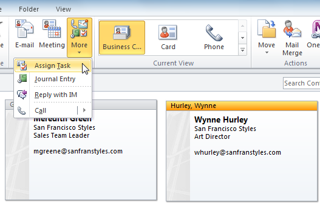
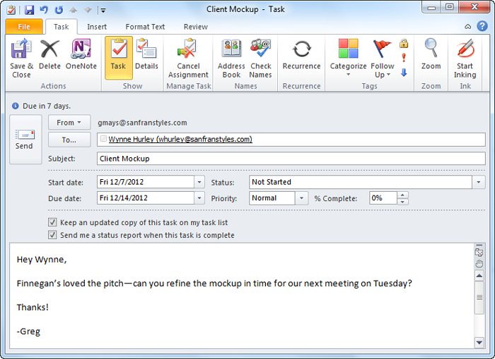
Dacă trebuie să accesați lista de contacte departe de computer, este ușor să imprimați contacte.
- Faceți clic pe fila Fișier din Panglică.
- Va apărea vizualizarea în culise. Găsiți și selectați Imprimare.
- Va apărea panoul Imprimare. Alegeți aspectul dorit, inclusiv cartea de vizită, lista de telefoane și multe altele, apoi faceți clic pe Imprimare.
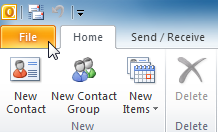
.png)
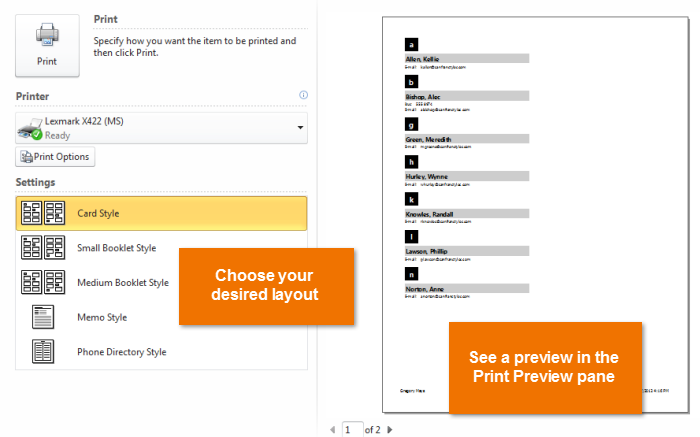